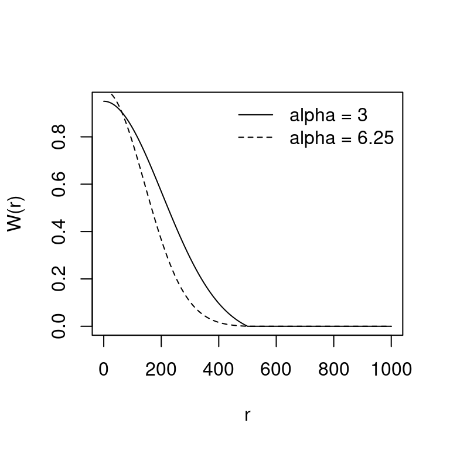

Chapter 3 Spatial interpolation of weather records
3.1 Overview
Ecological research studies conducted for historical periods can be perfomed using meteorological records obtained from surface weather stations of the area under study. The general procedure for interpolation is very similar to the one that underpins the U.S. DAYMET dataset (https://daymet.ornl.gov/). For any target point, minimum temperature, maximum temperature and precipitation are interpolated from weather records using truncated Gaussian filters, while accounting for the relationship between these variables and elevation (Peter E. Thornton, Running, and White 1997). Relative humidity can be either interpolated (in fact, dew-point temperature is the variable being interpolated) or predicted from temperature estimates, depending on whether it has been measured in weather stations or not. Potential (i.e. top-of-atmosphere) solar radiation is estimated taking into account latitude, seasonality, aspect and slope, following Garnier and Ohmura (1968). Potential solar radiation is then corrected to account for atmosphere transmittance using the predictions of temperature range, relative humidity and precipitation (P. E. Thornton and Running 1999). Finally, the wind vector (wind direction and wind speed) is interpolated by using weather station records and static wind fields.
In the following sections we detail the general algorithm used to obtain interpolation weights and the interpolation procedure for temperature, precipitation, relative humidity and wind. The estimation of potential and actual solar radiation is explained in the next chapter.
3.2 Interpolation weights
Peter E. Thornton, Running, and White (1997) suggested interpolating meteorological data using a truncated Gaussian filter. Its form with respect to a central point \(p\) is: \[\begin{equation} W(r) = e^{-\alpha \cdot (r/R_p)^2} - e^{-\alpha} \end{equation}\] if \(r \leq R_p\) and \(W(r) = 0\) otherwise. Here \(r\) is the radial distance from \(p\), \(R_p\) is the truncation distance and \(\alpha\) is the shape parameter. The spatial convolution of this filter with a set of weather station locations results, for each target point, in a vector of weights associated with observations. The following figure illustrates the Gaussian filter for \(R_p = 500\) and either \(\alpha = 3.0\) (continuous line) or \(\alpha = 6.25\) (dashed line):

\(R_p\) is automatically adjusted so that it has lower values in data-rich regions and is increased in data-poor regions. The method, however, requires the user to specify \(N\), the average number of observations to be included for each target point. \(R_p\) is then varied as a smooth function of the local density in such a way that this average is achieved over the spatial domain. Estimation of \(R_p\) is as follows:
- A user-specified value is used to initialize \(R_p\).
- Interpolation weights \(W_i\) are calculated for all \(i = (1, ..., n)\) stations, and the local station density is calculated as: \[\begin{equation} D_p = \frac{\sum_{i=1}^{n}{(W_i/\hat{W})}}{\pi \cdot R_p^2} \end{equation}\] where \(\hat{W}\) is the average weight over the untruncated region of the kernel, calculated as: \[\begin{equation} \hat{W} = \left( \frac{1 - e^{-\alpha}}{\alpha}\right)- e^{-\alpha} \end{equation}\]
- A new \(R_p\) value is calculated as a function of \(N\) and \(D_p\), as: \[\begin{equation} R_p = \sqrt{\frac{N^*}{D_p \cdot \pi}} \end{equation}\] where \(N^* = 2N\) for the first \(I - 1\) iterations, and \(N^* = N\) for the final iteration.
- The new \(R_p\) is substituted in step (2) and steps (2-4) are iterated a specified number of times \(I\). The final \(R_p\) value is used to generate interpolation weights \(W_i\).
Peter E. Thornton, Running, and White (1997) suggested to use this algorithm only once per point (and variable to be estimated), but since missing meteorological values can occur only in some days, we apply the algorithm for each target point and day. The interpolation method for a given set of observations is defined by four parameters \(R\), \(I\), \(N\) and \(\alpha\). Following Peter E. Thornton, Running, and White (1997), we set \(R = 140000\) meters and \(I = 3\) by default (see parameters initial_Rp and iterations given in function defaultInterpolationParams()). The other parameters (\(N\) and \(\alpha\)) depend on the variable to be interpolated.
3.3 Temperature
Predictions for minimum temperature and maximum temperature are done in the same way, so we refer to a general variable \(T\). We focus on the prediction of \(T_p\), the temperature at a single target point \(p\) and for a single day, based on observations \(T_i\) and interpolation weights \(W_i\) for the \(i = (1, ..., n)\) weather stations. Prediction of \(T_p\) requires a correction for the effects of elevation differences between observation points \(z_1, ..., z_n\) and the prediction point \(z_p\). Peter E. Thornton, Running, and White (1997) established the relationship between elevation and temperature using transformed variables (temporal or spatial moving window averages) for temperature and elevation, instead of the original variables, but we did not implement this feature here. A weighted least-squares regression is used to assess the relationship between temperature and elevation. Instead of regressing \(z_i\) on \(T_i\), the independent variable is the difference in elevations associated with a pair of stations, and the dependent variable is the corresponding difference in temperatures. This gives a regression of the form: \[\begin{equation} (T_1 - T_2) = \beta_0 + \beta_1 \cdot (z_1 - z_2) \end{equation}\] where subscripts \(1\) and \(2\) indicate the two stations of a pair and \(\beta_0\) and \(\beta_1\) are the regression coefficients. Regression is performed using all possible pairs of stations and the regression weight associated with each point is the product of the interpolation weights associated with the stations in a pair. The temperature for the target point, \(T_p\) is finally predicted as follows: \[\begin{equation} T_{p} = \frac{\sum_{i=1}^{n}{W_i\cdot (T_i + \beta_0 + \beta_1 \cdot(z_p - z_i))}}{\sum_{i=1}^{n}{W_i}} \end{equation}\] where \(z_p\) is the elevation of the target point and \(z_i\) is the elevation of the weather station.
3.4 Relative humidity
Relative humidity is a parameter not always recorded in weather stations. When input station weather data does not include relative humidity, meteoland estimates it directly from minimum and maximum temperature (Peter E. Thornton, Running, and White 1997). Assuming that minimum daily air temperature \(T_{min,p}\) at the target point is a good surrogate of dew-point temperature \(T_{d,p}\) (i.e. \(T_{d,p} = T_{min,p}\); note that this assumption may not be valid in arid climates), one can estimate actual vapor pressure \(e_{p}\) (in kPa) as: \[\begin{equation} e_{p} = 0.61078 \cdot e^{\left(\frac{17.269\cdot T_{d,p}}{237.3+T_{d,p}}\right)} \end{equation}\] and saturated vapor pressure \(e_{s,p}\) (in Pa) as: \[\begin{equation} e_{s,p} = 0.61078 \cdot e^{\left(\frac{17.269\cdot T_{a,p}}{237.3+T_{a,p}}\right)} \end{equation}\] where \(T_{a,p} = 0.606 \cdot T_{max,p} + 0.394 \cdot T_{min,p}\) is the average daily temperature. Finally, relative humidity \(RH_p\) (in percentage) is calculated as: \[\begin{equation} RH_p = 100 \cdot \frac{e_{p}}{e_{s,p}} \end{equation}\]
When relative humidity has been measured at weather stations, interpolation should be preferred to estimation from minimum and maximum temperature. However, because relative humidity depends on temperature, relative humidity \(RH_i\) of each weather station \(i\) has to be converted to dew-point temperature \(T_{d,i}\) before interpolation (Tymstra et al. 2010). To obtain the dew-point temperature one first needs to calculate vapor pressure: \[\begin{equation} e_i = e_{s,i} \cdot (RH_i / 100) \end{equation}\] where \(e_{s,i}\) is the saturated water vapor pressure of station \(i\), calculated as indicated above. Then, dew-point temperature of station \(i\) is obtained from: \[\begin{equation} T_{d,i} = \frac{237.3\cdot \ln(e_i/0.61078)}{17.269 - \ln(e_i/0.61078)} \end{equation}\] Unlike temperature, interpolation of dew temperature is not corrected for elevation differences. The dew-point temperature for the target point, \(T_{d,p}\) is predicted as: \[\begin{equation} T_{d,p} = \frac{\sum_{i=1}^{n}{W_i\cdot T_{d,i}}}{\sum_{i=1}^{n}{W_i}} \end{equation}\] From the interpolated dew-point temperature one can obtain actual vapour pressure \(e_{p}\) and, together with saturated vapour pressure at point \(p\), one calculates relative humidity as indicated above. If saturated vapour pressure is referred to average temperature \(T_{a,p}\), then relative humidity is average relative humidity \(RH_{a,p}\). If, instead, one refers saturated vapour pressure to minimum and maximum daily temperatures one obtains, respectively, maximum and minimum relative humidity values (\(RH_{max,p}\), \(RH_{min,p}\)). After their estimation, the routine checks that the predicted maximum and minimum relative humidity values stay within the physical limits 0% and 100%. Although interpolation of dew-point temperature does not account for elevation differences, interpolated values of relative humidity will normally exhibit a pattern following elevation differences because temperature is involved in the calculation of relative humidity.
3.5 Precipitation
Predictions of precipitation are complicated by the need to predict both daily occurrence and, conditioned on this, daily precipitation amount. Peter E. Thornton, Running, and White (1997) define a binomial predictor of spatial precipitation occurrence as a function of the weighted occurrence at surrounding stations. The precipitation occurrence probability \(POP_p\) is: \[\begin{equation} POP_p = \frac{\sum_{i=1}^{n}{W_{o,i}\cdot PO_i}}{\sum_{i=1}^{n}{W_{o,i}}} \end{equation}\] where \(PO_i\) is the binomial precipitation occurrence in station \(i\) (i.e., \(PO_i = 0\) if \(P_i = 0\) and \(PO_i = 1\) if \(P_i > 0\)) and \(W_{o,i}\) is the interpolation weight for precipitation occurrence. Once \(POP_p\) is calculated, then precipitation occurs if \(POP_p\) is smaller than a critical value (i.e. \(PO_p = 1\) if \(POP_p < POP_{crit}\) and \(PO_p = 0\) otherwise).
Conditional on precipitation occurrence we calculate the prediction of daily total precipitation, \(P_p\). Like with temperature, Peter E. Thornton, Running, and White (1997) established the relationship between elevation and precipitation using transformed variables (temporal or spatial moving window averages) for precipitation and elevation. Following their results, we transform precipitation values using a temporal window with side of 5 days. Weighted least-squares, where the weight associated with each point is the product of the interpolation weights associated with the stations in a pair, is used to account for elevation effects on precipitation. Unlike Peter E. Thornton, Running, and White (1997), who use the same set of interpolation weights (i.e. \(W_{o,i}\)) for precipitation occurrence and regression, we use a second set of interpolation weights \(W_{r,i}\) for the calculation of regression weights. The dependent variable in the regression function is defined as the normalized difference of the precipitation observations \(P_i\) for any given pair of stations: \[\begin{equation} \left(\frac{P_1 - P_2}{P_1 + P_2}\right) = \beta_0 + \beta_1 \cdot (z_1 - z_2) \end{equation}\] To obtain the predicted daily total \(P_p\) we use the following equation: \[\begin{equation} P_p = \frac{\sum_{i=1}^{n}{W_{o,i}\cdot P_i \cdot PO_i \cdot \left(\frac{1 + f}{1 - f} \right)}}{\sum_{i=1}^{n}{W_{o,i} \cdot PO_i}} \end{equation}\] where \(f = \beta_0 + \beta_1 \cdot (z_p - z_i)\). Note the usage of interpolation weight \(W_{o,i}\) (and not \(W_{r,i}\)). The form of prediction requires that \(\lvert f \rvert < 1\). A parameter \(f_{max}\) (with default \(f_{max} = 0.95\) ) is introduced to force \(\lvert f \rvert = f_{max}\) whenever \(\lvert f \rvert > f_{max}\).
3.6 Wind
Interpolation of wind characteristics depends on the amount of information available:
- Interpolation of wind speed only
- Interpolation of wind vectors (speed and direction)
- Interpolation of wind vectors using wind fields
The following subsections detail the calculations in each case.
3.6.1 Interpolation of wind speed
The predicted wind speed \(u_{p}\) for a target point \(p\) is the weighted average of station wind speed values \(\{u_{i}\}\) \(i=(1,... , n)\) using the interpolation weights \(W_i\) determined from the truncated Gaussian filter: \[\begin{equation} u_{p} = \frac{\sum_{i=1}^{n}{W_i \cdot u_{i}}}{\sum_{i=1}^{n}{W_i}} \end{equation}\]
3.6.2 Interpolation of wind vectors
Interpolation of wind vectors for a target point \(p\) is as follows. Let \(\mathbf{v}_{i}\) be the wind vector in weather station \(i\). \(\mathbf{v}_{i}\) is initially expressed using polar coordinates. Indeed, we have \(u_{i}\) and \(\theta_{i}\), the wind speed and wind direction, respectively. If we express \(\mathbf{v}_{i}\) in cartesian coordinates we have: \[\begin{equation} x_{i} = u_{i}\cdot \sin(\theta_{i}) \quad y_{i} = u_{i}\cdot \cos(\theta_{i}) \end{equation}\] The predicted wind vector \(\mathbf{v}_{p}\) is the weighted average of the wind vectors \(\{\mathbf{v}_{i}\}\) \(i=(1,... , n)\) predicted for point \(p\) using the interpolation weights \(W_i\) determined from the truncated Gaussian filter: \[\begin{equation} x_{p} = \frac{\sum_{i=1}^{n}{W_i \cdot x_{i}}}{\sum_{i=1}^{n}{W_i}} \quad y_{p} = \frac{\sum_{i=1}^{n}{W_i \cdot y_{i}}}{\sum_{i=1}^{n}{W_i}} \end{equation}\] The polar coordinates of the predicted wind vector \(\mathbf{v}_{p}\) are: \[\begin{equation} u_{p} = \sqrt{x^{2}_{p} + y^{2}_{p}} \quad \theta_{p} = \tan^{-1}(x_{p}/y_{p}) \end{equation}\]
3.6.3 Interpolation of wind vectors using wind fields
More precise wind interpolation of wind vectors requires a set of static wind fields covering the landscape of interest. Each of these wind fields has been calculated assuming a domain-level combination of wind speed and wind direction. The set of domain-level combinations should cover all possible winds in the landscape under study. For example, one could decide to include the combinations of eight different wind directions (i.e., N, NE, E, SE, …) and three wind speed classes. The wind estimation of a given target point depends on both the wind observations at weather stations and these static wind fields.
In a given day (and before processing target points) we begin by identifying, for each weather station \(i = (1, ... ,n)\), the wind field \(m_i\) corresponding to a minimum difference between the observed wind vector \(\mathbf{v}_i\) and the wind vector of the station in the wind field (i.e., minimum distance between the corresponding cartesian coordinates). The set of wind fields \(\{m_i\}\) \(i = (1, ... ,n)\) chosen for each weather station conform the information for wind interpolation in a given day.
Actual wind interpolation details for a target point \(p\) are as follows. We first draw for each \(i=(1,... , n)\) the wind vector \(\mathbf{v}_{m_i,p}\) corresponding to the location of the target point \(p\) in wind fields \(m_i\). Let \(u_{m_i,p}\) and \(\theta_{m_i,p}\) be the wind speed and wind direction of \(\mathbf{v}_{m_i,p}\), respectively. The cartesian coordinates of \(\mathbf{v}_{m_i,p}\) are: \[\begin{equation} x_{m_i,p} = u_{m_i,p}\cdot \sin(\theta_{m_i,p}) \quad y_{m_i,p} = u_{m_i,p}\cdot \cos(\theta_{m_i,p}) \end{equation}\] The predicted wind vector \(\mathbf{v}_{p}\) is the weighted average of the wind vectors \(\{\mathbf{v}_{m_i,p}\}\) \(i=(1,... , n)\) predicted for point \(p\) using the interpolation weights \(W_i\) determined from the truncated Gaussian filter: \[\begin{equation} x_{p} = \frac{\sum_{i=1}^{n}{W_i \cdot x_{m_i,p}}}{\sum_{i=1}^{n}{W_i}} \quad y_{p} = \frac{\sum_{i=1}^{n}{W_i \cdot y_{m_i,p}}}{\sum_{i=1}^{n}{W_i}} \end{equation}\] The polar coordinates of the predicted wind vector \(\mathbf{v}_{p}\) are found as before.